ProxyJam. Сервис для покупки прокси
ProxyJam — сервис для покупки прокси. Один из проектов нашей команды, главной задачей было реализовать быструю покупку прокси в минимальное количество кликов через лендинг и удобное управление ими через личный кабинет.
Открыть в Figma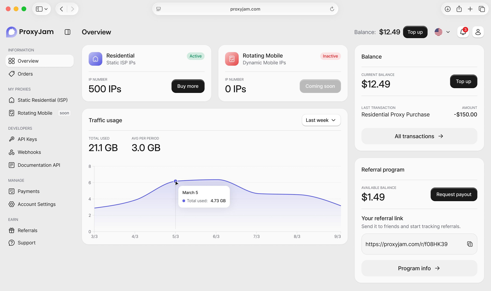
01.
О проекте
С нуля разработала дизайн сервиса для покупки прокси. Провела исследование конкурентов и терминологии, спроектировала сценарии покупки и управления услугами, создала визуальный стиль и UI-кит. Реализовала удобную форму заказа, позволяющую оформить прокси в несколько кликов без регистрации. Для личного кабинета спроектировала как базовые пользовательские сценарии, так и расширенный функционал для разработчиков, включая API Keys, Webhooks и реферальную программу.
02.
Задача
Увеличить конверсию посредством минимизации числа шагов для заказа для пользователей без аккаунта.
Обеспечить удобное управление услугами через личный кабинет, включая просмотр заказов, оплату, пополнение баланса, настройку профиля, а также функционал для разработчиков.
Создать современный и удобный лендинг с личным кабинетом для продажи прокси-сервисов.
03.
Мои обязанности
Проведение исследований.
Взаимодействие с разработчиками.
Проектирование сценария и структуры личного кабинета.
Презентация решения команде.
04.
Ограничения и сложности
Неопределенность на этапе проектирования: часть требований, связанных с провайдером и технической интеграцией, еще уточнялась. Из-за этого часть функционала можно было создать лишь приблизительно, под некоторые изменения на бэкенде приходилось подстраиваться.
Сервис изначально задумывался как платформа с несколькими видами прокси, но на момент работы бэкенд был готов только для одного из них. Поэтому важно было создать интерфейс, который решает текущие задачи бизнеса и при этом остается масштабируемым для будущих типов прокси.
Команда не имела предыдущего опыта работы с прокси-сервисами, поэтому потребовалось дополнительное исследование этой области, основной терминологии.
05.
Дизайн
Экран для заказа прокси
Стояла задача сделать покупку быстрой и удобной, потому что наша основная аудитория разбирается в прокси, поэтому возможность купить прокси есть сразу на главном экране страницы.
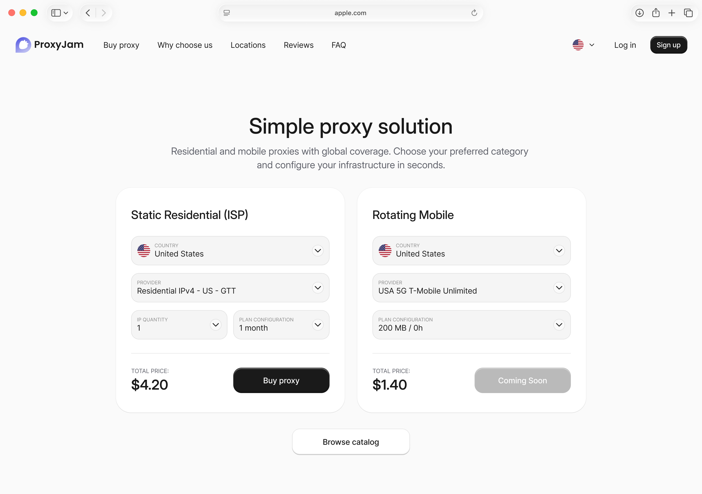
Модальное окно перед оплатой
Пользователи часто отваливаются при регистрации, которую требуют большинство сервисов, поэтому в ProxyJam сделали возможность покупки без регистрации. Когда клиенту потребуется личный кабинет, он может зарегистрироваться через почту, которую указывал при оформлении предыдущих заказов.
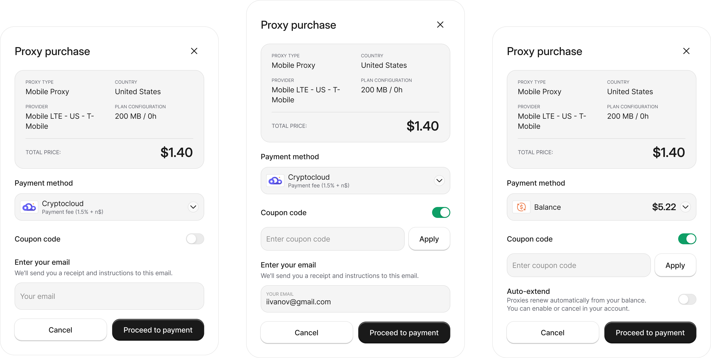
Личный кабинет
Спроектировала главный экран личного кабинета, который дает пользователю быстрый обзор по активным прокси, балансу, расходу трафика и ключевым действиям внутри сервиса.
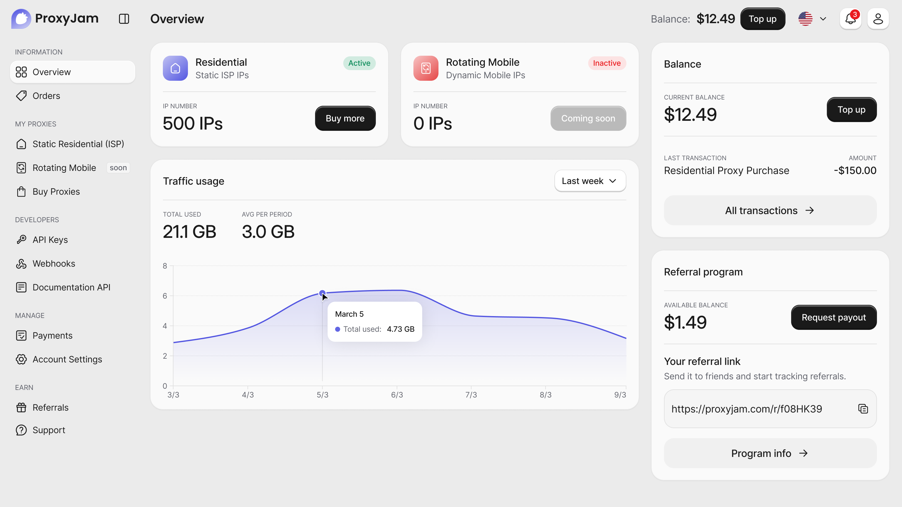
Таблица с прокси
Создала экран для управления статическими резидентскими прокси: со статусами, данными для подключения, сроками действия, автообновлением и дополнительной детализацией по каждой позиции.
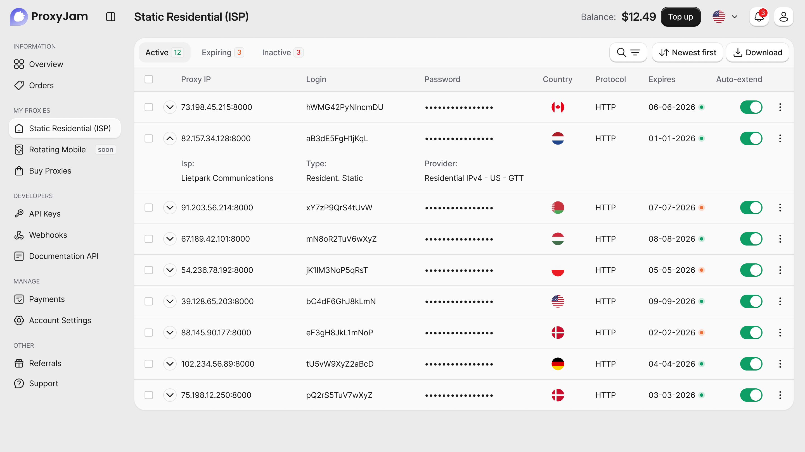
Управлять выбранными прокси массово или по одному за раз можно с помощью панели внизу, которая появляется после выбора позиций.
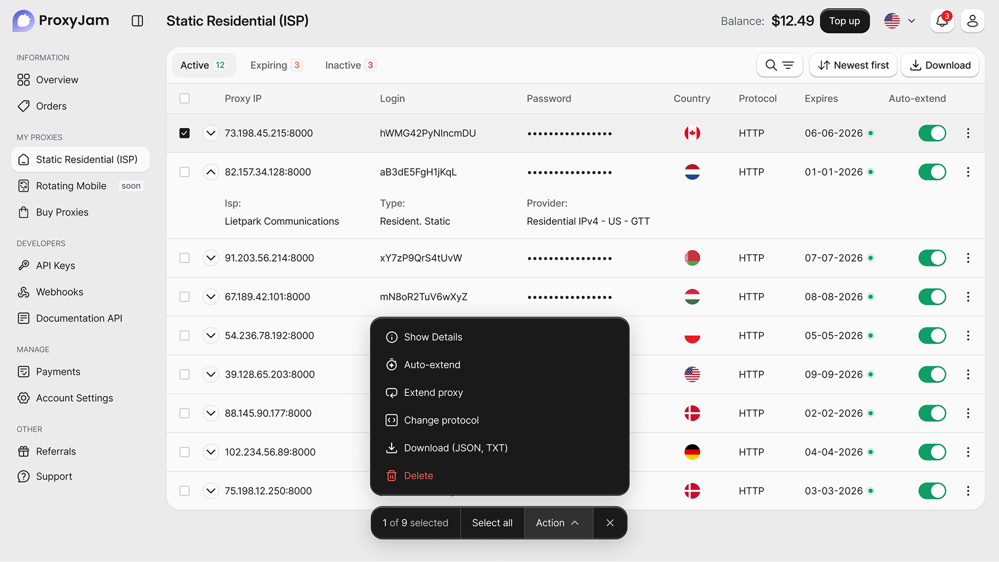
Поиск и фильтры
При нажатии кнопки “поиск и фильтры” открывается дополнительная панель с фильтрами и всплывает строка поиска. Строка поиска заменяет собой вкладки, поскольку фильтрация будет идти по всему контенту в таблице.

Информация по прокси
Спроектировала экран подробной информации по конкретному прокси, где пользователь может просматривать параметры подключения, данные для авторизации, статус, срок действия и использование трафика.
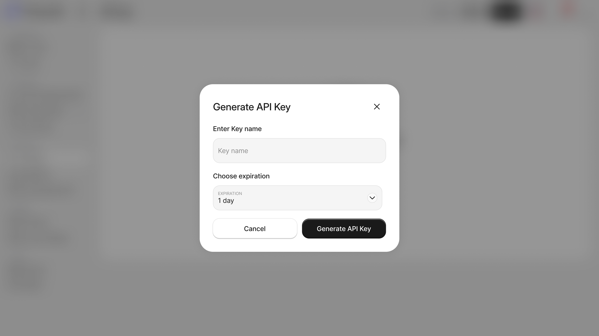
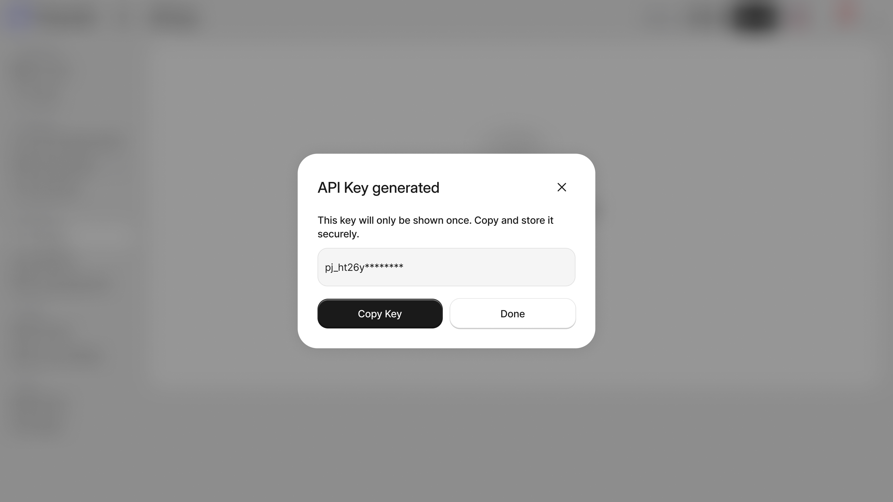
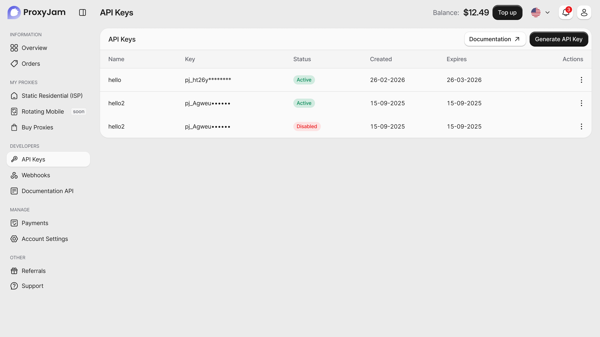
Пополнить
После нажатия “Пополнить” открывается модальное окно, где можно ввести свою сумму для пополнения или выбрать из предложенных вариантов.
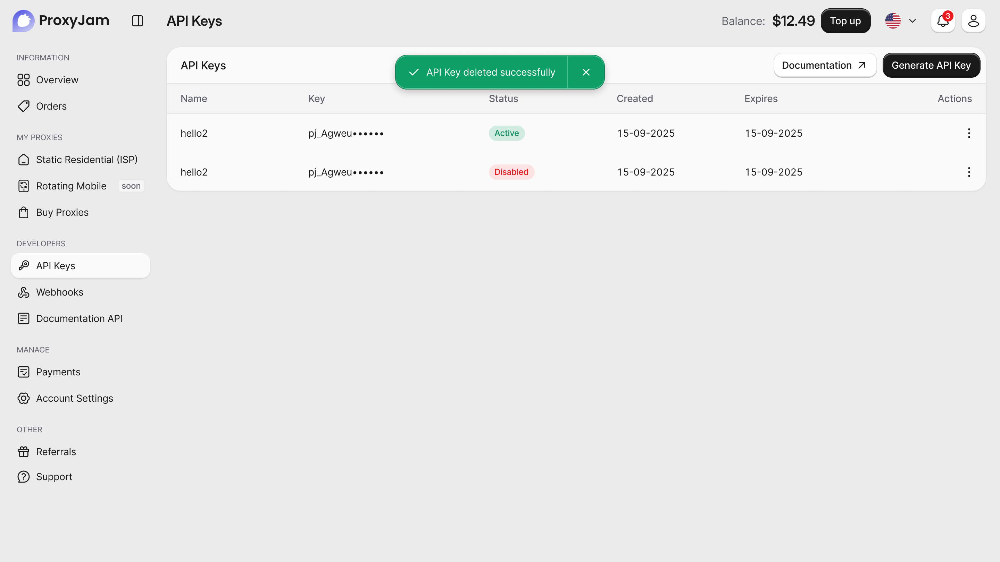
Купить прокси
Разработала страницу оформления заказа с пошаговой конфигурацией прокси, выбором провайдера, периода, количества IP и прозрачным расчетом суммы.
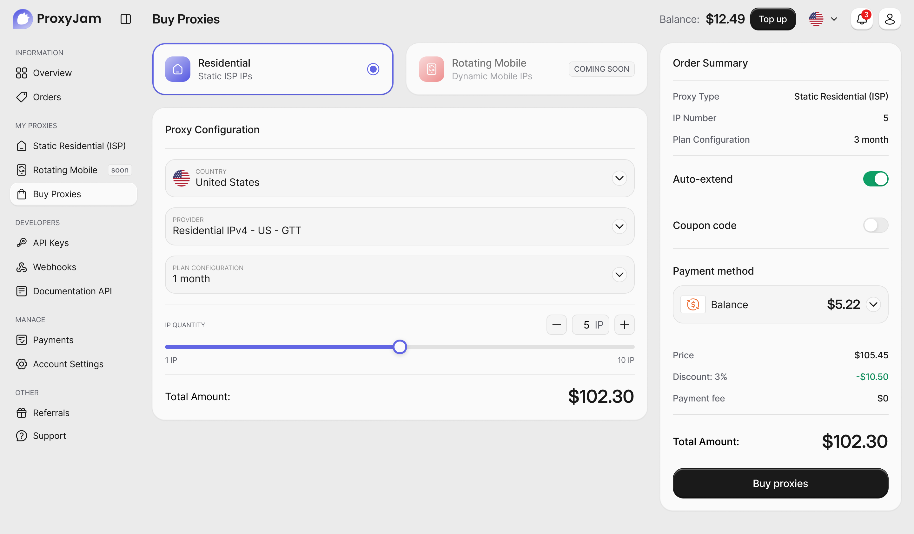
Реферальная программа
Спроектировала экран реферальной программы, где пользователь может получить ссылку для приглашения, отслеживать начисления и управлять выводом вознаграждений.
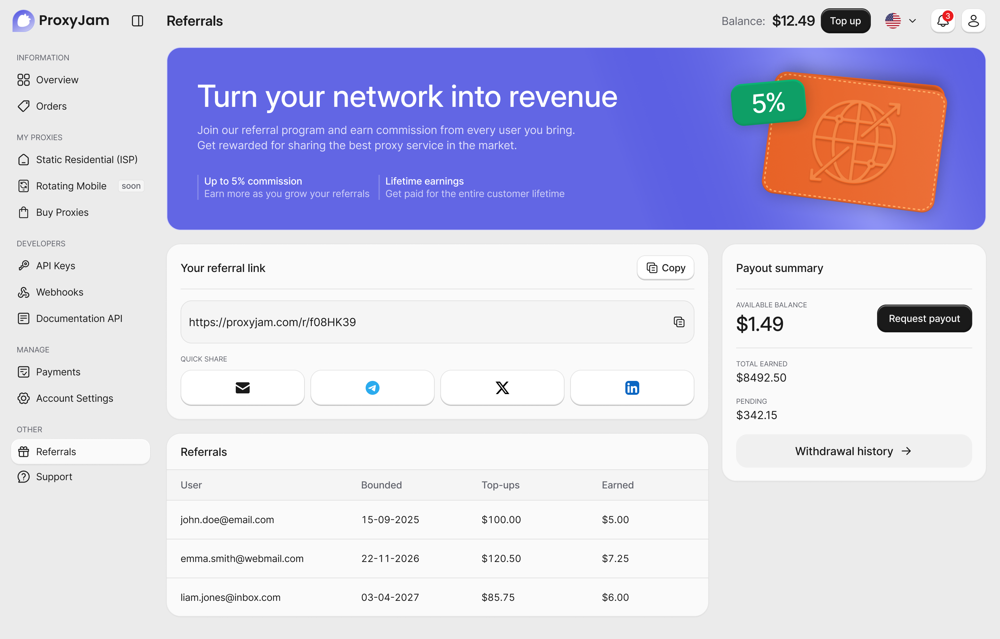
Сценарий создания API Keys
Спроектировала стартовый экран API Keys без созданных ключей с быстрым входом в сценарий.
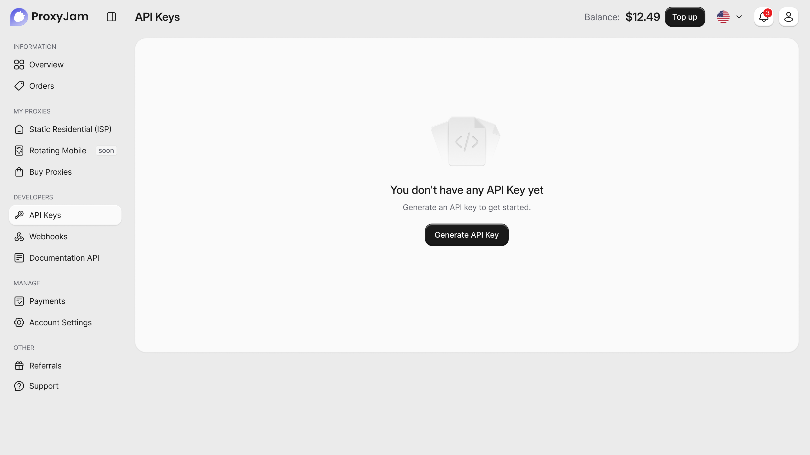
Разработала форму генерации API key, где пользователь задает название ключа и срок его действия.

Создала экран управления ключами с таблицей, статусами, датами создания и истечения, а также доступом к документации и повторной генерации ключей.
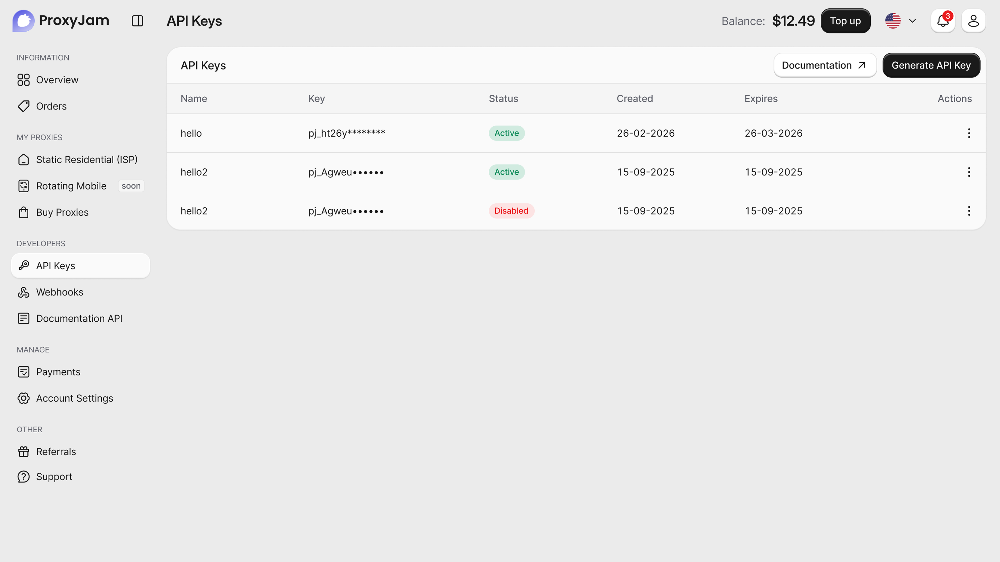
Модальное окно удаления ключа с предупреждением о последствиях, чтобы снизить риск случайного действия.
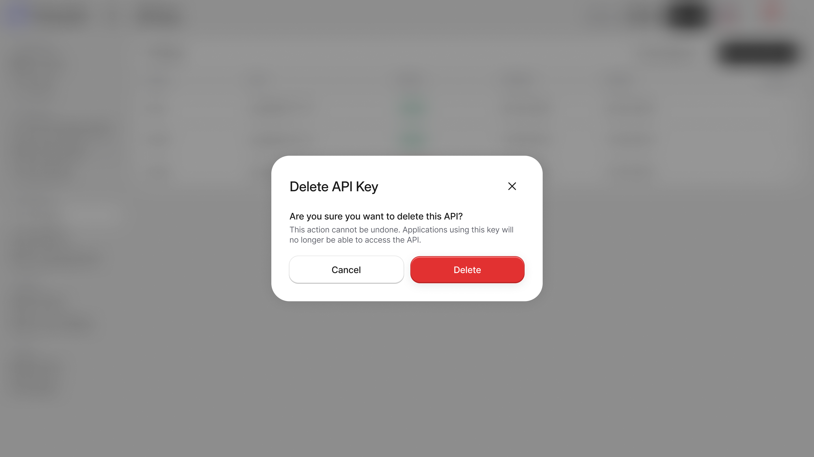
Добавила сценарий успешного удаления ключа с уведомлением и обновленным списком API keys.
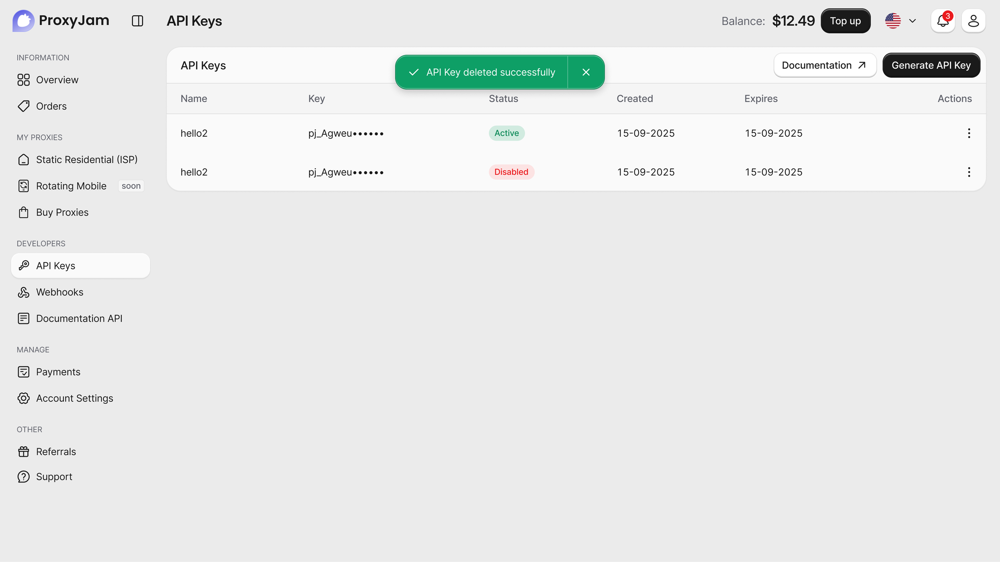
05.
Результаты
01
100+ экранов
Включая служебные состояния (ошибки, загрузки, пустые экраны).
02
400+ компонентов
Уникальные компоненты и их состояния.
03
15+ сценариев
Базовые пользовательские сценарии и функционал для разработчиков.
В результате была спроектирована почти полная десктопная версия сервиса с ключевыми сценариями покупки, оплаты и управления прокси. Часть сценариев остается в развитии: мобильная версия пока не реализована, а отдельные пользовательские потоки и состояния интерфейса требуют дальнейшей детализации по мере готовности бэкенда.